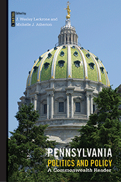

<body bgcolor="#FFFFFF" text="#000000" link="#0000FF" vlink="#CC0000" alink="#CC0000"><center><hr width="350" size="1" align="center" noshade>An evidence-based exploration of the most important issues in Pennsylvania politics and policy today<hr width="350" size="1" align="center" noshade><p><a href="https://cdcshoppingcart.uchicago.edu/Cart/ChicagoBook.aspx?ISBN=&&PRESS=temple" target="_top">Buy this book!</a> | <a href="https://cdcshoppingcart.uchicago.edu/Cart/Cart.aspx?PRESS=temple" target="_top">View Cart</a> | <a href="https://cdcshoppingcart.uchicago.edu/Cart/Cart.aspx?PRESS=temple" target="_top">Check Out</a></p><p></p></center><!--none//--><h1 class = "booktitle">Pennsylvania Politics and Policy</h1> <h1 class = "subtitle">A Commonwealth Reader</h1>
<h3>Edited by J. Wesley Leckrone and Michelle J. Atherton </h3>
paper: $29.95, Jun 18<BR>EAN:&nbsp;978-1-4399-1670-4<BR><font color=#990033>Not Yet Published Preorder</FONT><font size=-7><br>&nbsp;</font></p><p class="info"><p class="info">e-book: $29.95, Jun 18<BR>EAN:&nbsp;978-1-4399-1671-1<BR><font color=#990033>Not Yet Published Preorder</FONT><font size=-7><br>&nbsp;</font></p></p></td></tr></table>
<BR> <p class="info">236 pp<BR> 6 x 9<BR> 15 tables, 15 line drawings, 5 halftones <p class="info"><font size=-7>&nbsp;</font></p><p class="info">
</P><BLOCKQUOTE></BLOCKQUOTE>
<p>The activities of state governments have always been important in the American federal system. However, recent partisan gridlock in Washington, DC has placed states at the forefront of policymaking as the national government maintains the status quo. <i>Pennsylvania Politics and Policy, Volume 1 </i>is designed to showcase current issues of interest to Pennsylvanians. This reader contains updated chapters from recent issues of <i>Commonwealth: A Journal of Pennsylvania Politics and Policy</i> on education, health care, public finance, tax policy, environmental policy, alcohol policy and more. Each chapter is supplemented by forums with arguments in support of or opposed to contested elements of state policy, discussion questions, and suggestions for further reading. In addition, <i>Pennsylvania Politics and Policy, Volume 1</i> includes a comprehensive guide to researching state government and policy online. It is designed as a text or supplement for college or advanced high school classes in American government, state and local politics, public policy, and public administration. Contributors include: <i>David G. Argall, Tom Baldino</i>, <i>Michele Deegan, Michael Dimino, George Hale, Rachel L. Hampton , Paula Duda Holoviak Jon Hopcraft, Vera Krekanova, Maureen W. McClure, Barry G. Rabe, Marguerite Roza, Lanethea Mathews Shultz</i>, <i>Jennie Sweet-Cushman, Amanda Warco, and the editors.</i><br>
<P CLASS="top"><A HREF="#top">BACK TO TOP</A></P>&nbsp;
<BR>&nbsp;
&nbsp;<P>
</P><BR>&nbsp;
<H2 class="inpageheading"><A NAME="author bio"></a>About the Author(s)</H2><p><b>J. Wesley Leckrone</b> is an Associate Professor of Political Science, Widener University and Editor of <i>Commonwealth: A Journal of Pennsylvania Politics and Policy</i>.<br>
<p><b>Michelle J. Atherton</b> is Associate Director of the Institute for Public Affairs at Temple University. She is Managing Editor of <i> Commonwealth: A Journal of Pennsylvania Politics and Policy.</i><br>
<P CLASS="top"><A HREF="#top">BACK TO TOP</A></P>
<p><h2 class="inpageheading"><a name="subjects"></a>Subject Categories</h2> <p><a href="http://www.temple.edu/tempress/political.html" target="_top">Political Science and Public Policy</a> <br><a href="http://www.temple.edu/tempress/business.html" target="_top">Business/Economics</a> <br><a href="" target="_top"></a> <br><a href="" target="_top"></a> <br><a href="" target="_top"></a> </p>
</p>
<P>
</P>
<p align="center"><a href="https://cdcshoppingcart.uchicago.edu/Cart/ChicagoBook.aspx?ISBN=&&PRESS=temple" target="_top">Buy this book!</a> | <a href="https://cdcshoppingcart.uchicago.edu/Cart/Cart.aspx?PRESS=temple" target="_top">View Cart</a> | <a href="https://cdcshoppingcart.uchicago.edu/Cart/Cart.aspx?PRESS=temple" target="_top">Check Out</a></p><p><font face="Arial" size="1"><a href="copyright.html" onMouseOver="window.status='Web Copyright Policy';return true;" onMouseOut="window.status=''" title="Web Copyright Policy">&copy;</a> 2018 <a href="http://www.temple.edu" target="new" onMouseOver="window.status='Link to Temple University home page';return true;" onMouseOut="window.status=''" title="Link to Temple University home page">Temple University</a>. All Rights Reserved. http://www.temple.edu/tempress/titles/2409B_reg.html</font></p>